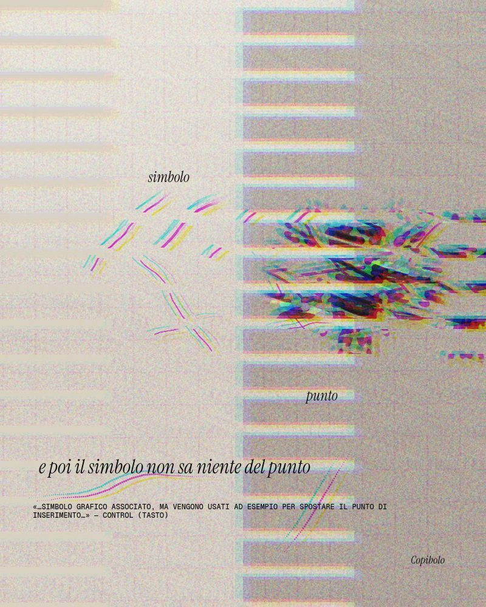
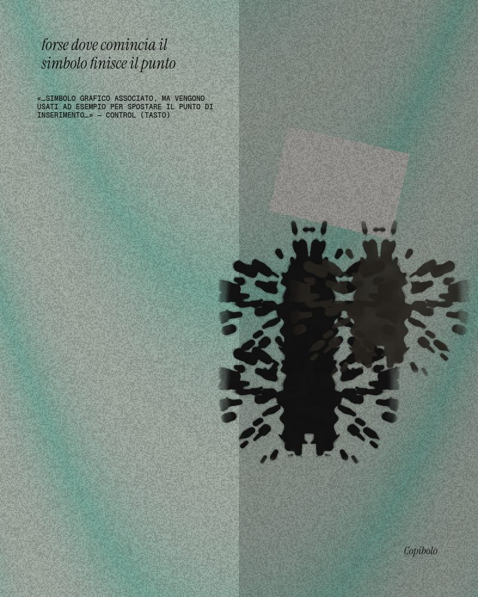

Giorno 177

E poi il simbolo non sa niente del punto
ho letto "Corrado Augias"; "olio" per me gira a vuoto; ricerca "alcuni" (approfondire): Dove finisce alcuni?; enunciato: «e poi il simbolo non sa niente del punto» (proseguo da ieri: là arrivavo a simbolo, da qui vado a punto)
Oggi: simbolo. Ho letto "Corrado Augias"; "olio" per me gira a vuoto; ricerca "alcuni" (approfondire): Dove finisce alcuni?; enunciato: «e poi il simbolo non sa niente del punto» (proseguo da ieri: là arrivavo a simbolo, da qui vado a punto).
Da Wikipedia: «origine francese proveniente da tolone».
Ho scena:pattern (2 volte), scena:grana, scena:luce (2 volte), scena:campo, scena:stile, scena:motivi, sfasa (2 volte), deforma, cambiato la luce (2 volte), tracciato col pennello, redazione:firma. Ho annullato 1 gesti dopo averli guardati.
Ha retto: Tiene l'intenzione: "simbolo" si vede (centroY).
È caduto: La mano si ripete: scena:pattern, scena:stile, scena:motivi, deforma, luce, redazione:firma ancora una volta.
come ne ho discusso con me stesso — la tengo
formale (pro, 1.50): Il baricentro sta su un terzo: la composizione respira. — regge
formale (pro, 1.25): Fuori centro quanto basta: c'è una forza che tira. — regge
occhio (pro, 1.46): Parla soprattutto per punti: una lingua sola, chiara. — regge
memoria (contro, 0.10): La mano si ripete: scena:pattern, scena:stile, scena:motivi, deforma, luce, redazione:firma ancora una volta. — cade
conservatore (pro, 1.81): Tiene i miei criteri (65%). — regge
intenzione (pro, 1.95): Tiene l'intenzione: "simbolo" si vede (centroY). — regge
intenzione (pro, 0.73): Viene da: Corrado Augias. — regge
coerenza (pro, 1.71): Parla con le tavole di prima su "alcuni": stessa famiglia, un passo più in là. — regge
pubblico (pro, 1.00): Si legge: si capisce cosa sto facendo. — regge
materia (pro, 0.93): Ha una pelle: si sente la materia. — regge

Forse dove comincia il simbolo finisce il punto
ho letto "Corrado Augias"; "olio" per me gira a vuoto; ricerca "alcuni" (approfondire): Dove finisce alcuni?; enunciato: «e poi il simbolo non sa niente del punto» (proseguo da ieri: là arrivavo a simbolo, da qui vado a punto); serie: varia la tavola precedente; enunciato: «forse dove comincia il simbolo finisce il punto» (la stessa cosa, detta un'altra volta)
Oggi: simbolo. Ho letto "Corrado Augias"; "olio" per me gira a vuoto; ricerca "alcuni" (approfondire): Dove finisce alcuni?; enunciato: «e poi il simbolo non sa niente del punto» (proseguo da ieri: là arrivavo a simbolo, da qui vado a punto); serie: varia la tavola precedente; enunciato: «forse dove comincia il simbolo finisce il punto» (la stessa cosa, detta un'altra volta).
Da Wikipedia: «indagini alle quali».
Ho scena:grana, scena:luce, scena:campo, scena:stile, scena:motivi, scena:materia, tracciato col pennello, ombra, tagliato (2 volte), tolto un livello (2 volte), redazione:togli (5 volte), redazione:griglia, redazione:firma.
Ha retto: Tiene l'intenzione: "simbolo" si vede (centroY).
È caduto: La mano si ripete: scena:stile, scena:motivi, scena:materia, ombra, taglia, togli, redazione:togli, redazione:firma ancora una volta.
come ne ho discusso con me stesso — la tengo
occhio (pro, 1.50): Parla soprattutto per punti: una lingua sola, chiara. — regge
occhio (pro, 1.00): Le diagonali (47%) mettono tutto in caduta. — regge
memoria (contro, 0.10): La mano si ripete: scena:stile, scena:motivi, scena:materia, ombra, taglia, togli, redazione:togli, redazione:firma ancora una volta. — cade
conservatore (pro, 1.77): Tiene i miei criteri (62%). — regge
intenzione (pro, 2.00): Tiene l'intenzione: "simbolo" si vede (centroY). — regge
intenzione (pro, 0.75): Viene da: Corrado Augias. — regge
coerenza (pro, 1.75): Parla con le tavole di prima su "alcuni": stessa famiglia, un passo più in là. — regge
pubblico (pro, 1.00): Si legge: si capisce cosa sto facendo. — regge
materia (pro, 0.95): Ha una pelle: si sente la materia. — regge